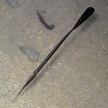
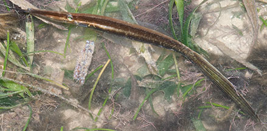
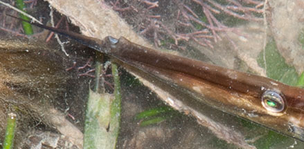
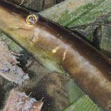

|
|
| fishes text index | photo index |
| Phylum Chordata > Subphylum Vertebrate > fishes > Family Monacanthidae |
| Bearded
filefish Anacanthus barbatus Family Monacanthidae updated Sep 2020 Where seen? This long filefish with a 'beard' was seen on Cyrene Reef during a seine net survey of the fishes there. It is also sometimes seen on other shores. Elsewhere it is found in shallow waters in sandy, weedy areas, also muddy estuaries and mangroves. It is said to be seen lining up with ropes, seawhips, large stringy-type sponges, as well as mangrove roots. It may also float over the open bottom and may stand on its head. In this way, it may mimic mangrove propagules, sea pens and probably seagrass. Features: To 35cm. Highly elongated fish with a long body flattened sideways, and a long large tail fin. It has an upturned mouth and a barbel under its chin that it can straighten out so that the fish looks like a pointed stick. Like other filefishs, it has a flap under its body but it is tiny. Sometimes mistaken for other fishes that resemble sticks. Here's more on how to tell apart stick-like fishes commonly seen on our shores. |
 Tanah Merah, Sep 11 Photo shared by Neo Mei Lin on her blog. |
 Cyrene Reef, May 08 |
|
 Tiny uptuned mouth. Barbel under the chin that can be straightened out. |
 Like other filefishes, it has a flap under the body. |
| Bearded filefish on Singapore shores |
On wildsingapore
flickr
|
| Other sightings on Singapore shores |
| Sentosa Marina, May 2018 |
Links
References
|